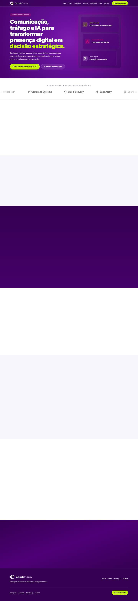
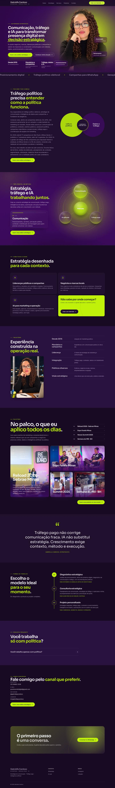

gabriellapcardoso.com.br
antes e depois
Abrir o site atual
Abrir o site novo
PRIMEIRA TELA · ARRASTE A BARRA
ANTES
DEPOIS
O QUE DÁ PARA MELHORAR NO SITE ATUAL
Demorou 16,9 s para abrir.
CELULAR · ANTES
CELULAR · DEPOIS
ANTES · PÁGINA INTEIRA

DEPOIS · PÁGINA INTEIRA

 ANTESDEPOIS
ANTESDEPOIS ANTESDEPOIS
ANTESDEPOIS